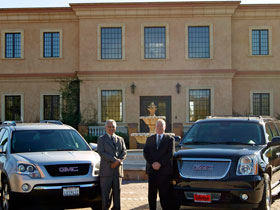
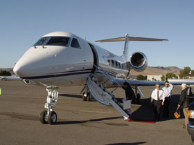
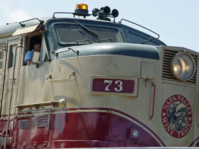

Browse Our Services
Our Vechicles
You can book a GMC Acadia or GMC Denali XL with all of the amenities you need. We can accommodate up to 7 passengers and you're guaranteed a luxurious and comfortable ride while enjoying the wine country.
Our Rates
We like to keep it simple and affordable.
Local Pickups-$75.00/hr
Long Distance Pickups (S.F. Bay Area; Sacramento)-$85.00/hr.
We have no other fees, taxes or surcharges with the exception of a 3% surcharge when paying by credit card.
Water, sodas, and beer are complimentary and our vehicles are equipped with XM radio and audio connections.
Tasting fees and lunch are not included. Gratuity is not included but is at your sole discretion and always appreciated.
Cancellation Policy:Â
Cancellations within 4 days of the chartered tour date will be charged the remaining full balance. This fee will not be assessed if the client re-books for another date.
FAQ's -
How many wineries should we visit in a day? That's really up to you and the amount of time you want to spend. Our experience has been that 3-4 wineries and lunch makes for a memorable day. After that palate fatigue starts to set in.
Do I need to make appointments? That depends on the winery. Some require appointments no matter the group size according to their use permit or in wanting to keep the experience intimate. Others do not for group sizes under 6. It's always a courtesy to call the wineries when the group size is 6 or more.